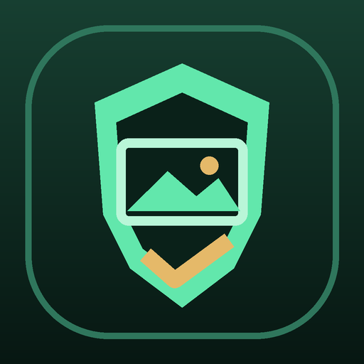

Processing stays local
Selected JPEG files are read and cleaned on your Android device.

ExifShieldPhoto PrivacyExifShield inspects JPEG metadata and creates privacy-clean copies locally. The app has no account, advertising, analytics, backend, or Internet permission.
Selected JPEG files are read and cleaned on your Android device.
You choose specific JPEGs with Android's system document picker.
V1 contains no ad, analytics, account, tracking, or cloud SDK.
ExifShield is an Android utility for JPEG photo privacy. It lets you choose up to 12 JPEG files, view metadata such as GPS coordinates, capture time, device make and model, software, camera settings, and creator fields, then create cleaned copies in Pictures/ExifShield.
The original files are not edited. ExifShield removes privacy-bearing EXIF, XMP, IPTC, and JPEG comment containers from each copy without decoding or recompressing the compressed image scan. A minimal orientation value may be retained so the cleaned photo displays correctly.
Dev Jang does not receive, store, sell, or share your photos, metadata, file names, app activity, device identifiers, location, contact information, or diagnostics through ExifShield. The app has no developer-operated server, user account, advertising service, analytics service, crash-reporting service, or cloud synchronization.
A selected photo may already contain personal information, including precise GPS coordinates, capture time, device details, or creator information. ExifShield reads these fields only to show them to you and verify the cleaned copy. They are not transmitted to the developer.
ExifShield decodes a small preview for the inspection card and reads the selected JPEG while creating a clean copy. Temporary data is held by the app process as needed and is not retained on a developer server.
ExifShield v1 does not integrate ads, analytics, social login, payments, or another third-party data service. Distribution and updates through Google Play are governed by Google Play's own terms and privacy practices.
Pictures/ExifShield until you move or delete them.ExifShield does not request broad photo-library, storage, location, camera, microphone, contacts, nearby-device, notification, or advertising permission. Android may add a package-scoped internal receiver permission used by the Flutter framework; it does not grant access to another app's data.
There is no developer-server retention period because ExifShield does not transmit files or metadata to a developer server. ExifShield is a general-audience utility and does not knowingly collect personal information from children or adults.
Open your gallery or file manager and look in Pictures/ExifShield. Output names include _private_ and a timestamp.
Some JPEGs contain no sensitive fields that ExifShield recognizes. You may still create a copy.
When needed, ExifShield keeps only the minimal orientation tag so a rotated photo displays correctly. Location, device, capture time, creator, XMP, IPTC, and comment data are still removed.
Email jjw33063@gmail.com with “ExifShield Support” or “ExifShield Privacy” in the subject. Include only what is needed; do not attach a private photo unless necessary and intentional.
If ExifShield's data practices or features change, this page will show a new effective date before the corresponding release when required.